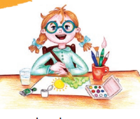
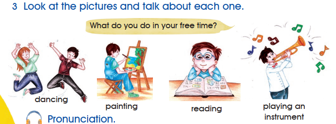
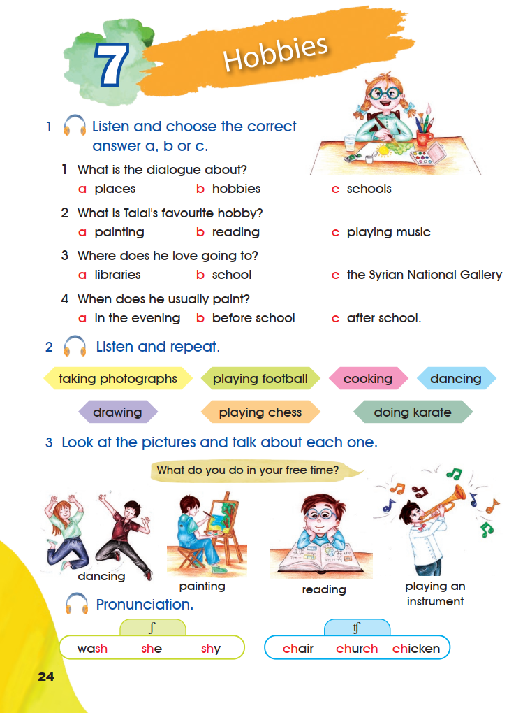
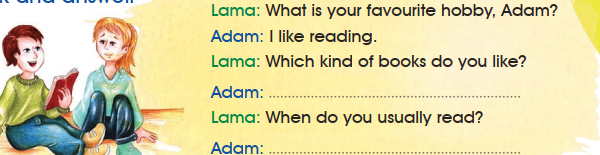
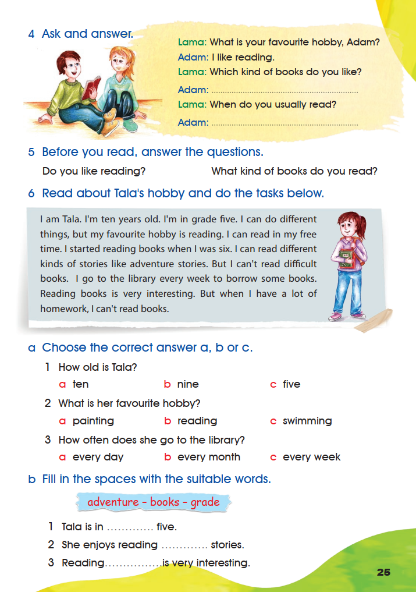
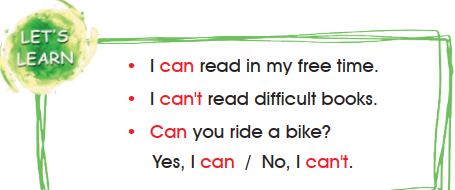
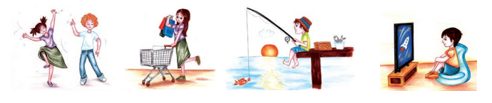
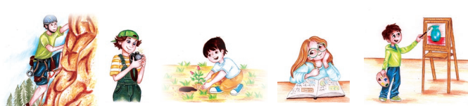
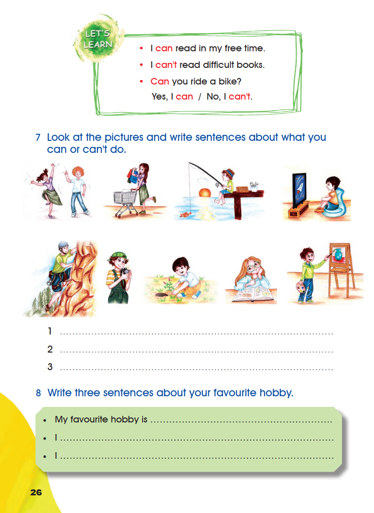

Pupil’s Book — Hobbies
Activities 1–8 and the Pronunciation box appear in their original order across pages 24–26. Listening notes are kept separate from the book’s wording.
1 Listen and choose the correct answer a, b or c.

- 1
What is the dialogue about?
- 2
What is Talal’s favourite hobby?
- 3
Where does he love going to?
- 4
When does he usually paint?
0 of 4 answered.
2 Listen and repeat.
- taking photographs
- playing football
- cooking
- dancing
- drawing
- playing chess
- doing karate
The seven labels are printed on coloured shapes in two rows; they are reproduced in the printed reading order.
3 Look at the pictures and talk about each one.

What do you do in your free time?
- dancing
- painting
- reading
- playing an instrument
This is a speaking task built on the printed pictures and their printed labels. The page prints no key.
Pronunciation.
/ʃ/
- wash
- she
- shy
/tʃ/
- chair
- church
- chicken
1 Listen and choose is decided by the recording. The recording was not supplied, so this page keeps the four questions and every printed option and provides no answer key.
2 Listen and repeat, 3 Look at the pictures and talk about each one and Pronunciation are speaking tasks; the page prints no key for them.
Nothing on this page is marked correct or incorrect for the listening items. Choosing an option only stores your own attempt on this browser.
Open the source page · Pupil’s Book · p. 24
This is the original supplied image, shown without redrawing or generation.

4 Ask and answer.

Lama: What is your favourite hobby, Adam?
Adam: I like reading.
Lama: Which kind of books do you like?
Adam:
Lama: When do you usually read?
Adam:
5 Before you read, answer the questions.
0 of 2 filled.
6 Read about Tala’s hobby and do the tasks below.
I am Tala. I’m ten years old. I’m in grade five. I can do different things, but my favourite hobby is reading. I can read in my free time. I started reading books when I was six. I can read different kinds of stories like adventure stories. But I can’t read difficult books. I go to the library every week to borrow some books. Reading books is very interesting. But when I have a lot of homework, I can’t read books.
a Choose the correct answer a, b or c.
- 1
How old is Tala?
- 2
What is her favourite hobby?
- 3
How often does she go to the library?
0 of 3 answered.
b Fill in the spaces with the suitable words.
- adventure
- books
- grade
- 1
Tala is in five.
- 2
She enjoys reading stories.
- 3
Reading is very interesting.
0 of 3 filled.
6 a Choose the correct answer: 1 a ten · 2 b reading · 3 c every week.
6 b Fill in the spaces: 1 grade · 2 adventure · 3 books.
4 Ask and answer and 5 Before you read are personal speaking and writing tasks; the page prints no key for them. Model answers for activity 4: Adam: I like adventure stories. · Adam: I usually read in my free time.
Every answer in activity 6 is stated in the printed text or settled by the printed word bank.
Open the source page · Pupil’s Book · p. 25
This is the original supplied image, shown without redrawing or generation.

Let’s Learn

- I can read in my free time.
- I can’t read difficult books.
- Can you ride a bike?
- Yes, I can / No, I can’t.
7 Look at the pictures and write sentences about what you can or can’t do.


0 of 3 filled.
8 Write three sentences about your favourite hobby.
0 of 3 filled.
7 Look at the pictures and write sentences: these are personal sentences. Model sentences read from the printed pictures: I can play football. · I can take photographs. · I can’t climb a big rock.
8 Write three sentences about your favourite hobby: this is personal writing; the page prints no key. Model answer: My favourite hobby is drawing. I draw animals and flowers. I draw in my free time.
The nine pictures show dancing, shopping, fishing, watching television, climbing, taking photographs, planting, reading and painting. The page does not print a key for activities 7 and 8.
Open the source page · Pupil’s Book · p. 26
This is the original supplied image, shown without redrawing or generation.
